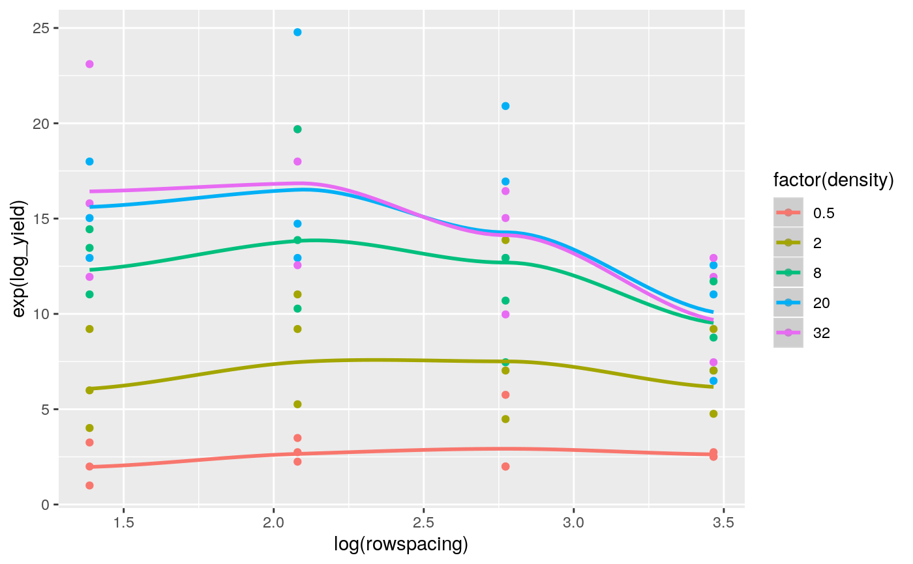
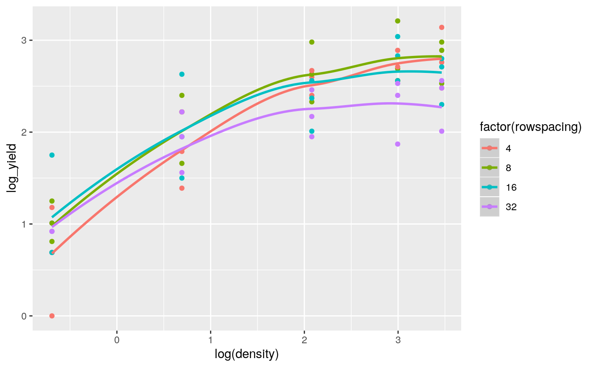

Mead (1988, p. 323) describes an experiment on spacing effects with turnips, which was laid out in three complete blocks. Five different seed rates (0.5, 2, 8, 20, 32 lb/acre) were tested in combination with four different row widths (4, 8, 16, 32 inches), giving rise to a total of 20 treatments.
Details
Transformation of the dependent variable will often stabilize the variance of the observations whereas transformation of the regressor variables will often simplify the fitted model. In this example, the fit of a regression model based on the original seed rate and row width variables is compared with the fit of a regression model based on the log transformed seed rates and log transformed row widths. In each case, the model lack-of-fit is examined by assessing the extra variability explained when the Density and Spacing treatment factors and their interactions are added to the quadratic regression models. All yields are logarithmically transformed to stabilize the variance.
The first analysis fits a quadratic regression model of log yields on the untransformed seed rates and row widths (Table 16) while the second analysis fits a quadratic regression model of log yields on the log transformed seed rates and log transformed row widths (Table 17). The analysis of variance of the first model shows that significant extra variability is explained by the Density and Spacing factors and this shows that a quadratic regression model is inadequate for the untransformed regressor variables. The analysis of variance of the second model, however, shows no significant extra variability explained by the Density and Spacing factors and this shows that the quadratic regression model with the log transformed regressor variables gives a good fit to the data and therefore is the preferred model for the observed data.
The superiority of the model with the log transformed regressor variables is confirmed by comparing the fit of the quadratic regression model for the untransformed regressor variables (Figs 8 and 9) versus the fit of the quadratic regression model for the log transformed regressor variables (Figs 10 and 11).
Fig 12a shows diagnostic plots for the fit of a quadratic model with untransformed regressor variables while Fig 12b shows corresponding diagnostic plots for the fit of a quadratic model with loge transformed regressor variables. Each of the four types of diagnostic plots in the two figures shows an improvement in fit for the transformed versus the untransformed regressor variables.
agriTutorial: return to home page if you want to select a different example
References
Mead, R. (1990). The Design of Experiments: Statistical Principles for Practical Applications. Cambridge University Press.
Kenward, M. G., & Roger, J. H. (1997). Small sample inference for fixed effects from restricted maximum likelihood. Biometrics, 53, 983–997.
Piepho, H., & Edmondson, R. (2018). A tutorial on the Statistical Analysis of Factorial Experiments with Qualitative and Quantitative treatment factor levels. Journal of Agronomy and Crop Science. (https://onlinelibrary.wiley.com/doi/full/10.1111/jac.12267).
Examples
library(broom) library(broom.mixed) library(dplyr) library(emmeans) library(ggfortify) library(ggplot2) library(lmerTest) library(magrittr) library(tidyr) options(contrasts = c('contr.treatment', 'contr.poly')) ##----fm5.1---- fm5.1 <- lm(log_yield ~ Replicate + density * rowspacing + I(density^2) + I(rowspacing^2) + Density * Spacing , turnip) fm5.1.ANOVA <- anova(fm5.1) ##----fm5.1.ANOVA---- fm5.1.ANOVA#> Analysis of Variance Table #> #> Response: log_yield #> Df Sum Sq Mean Sq F value Pr(>F) #> Replicate 2 3.4168 1.7084 43.6173 1.443e-10 *** #> density 1 14.1195 14.1195 360.4862 < 2.2e-16 *** #> rowspacing 1 0.5177 0.5177 13.2186 0.0008184 *** #> I(density^2) 1 6.1783 6.1783 157.7372 4.242e-15 *** #> I(rowspacing^2) 1 0.2237 0.2237 5.7124 0.0219091 * #> Density 2 5.3498 2.6749 68.2929 2.617e-13 *** #> Spacing 1 0.1752 0.1752 4.4722 0.0410661 * #> density:rowspacing 1 0.4470 0.4470 11.4136 0.0016958 ** #> Density:Spacing 11 0.5505 0.0500 1.2777 0.2740490 #> Residuals 38 1.4884 0.0392 #> --- #> Signif. codes: 0 ‘***’ 0.001 ‘**’ 0.01 ‘*’ 0.05 ‘.’ 0.1 ‘ ’ 1##----fm5.2---- fm5.2 <- lm(log_yield ~ Replicate + log(density) * log(rowspacing) + I(log(density)^2) + I(log(rowspacing)^2) + Density * Spacing, turnip) fm5.2.ANOVA <- anova(fm5.2) ##----fm5.2.ANOVA---- fm5.2.ANOVA#> Analysis of Variance Table #> #> Response: log_yield #> Df Sum Sq Mean Sq F value Pr(>F) #> Replicate 2 3.4168 1.7084 43.6173 1.443e-10 *** #> log(density) 1 23.4772 23.4772 599.3960 < 2.2e-16 *** #> log(rowspacing) 1 0.2803 0.2803 7.1562 0.0109578 * #> I(log(density)^2) 1 2.1001 2.1001 53.6189 9.043e-09 *** #> I(log(rowspacing)^2) 1 0.6100 0.6100 15.5750 0.0003308 *** #> Density 2 0.0703 0.0351 0.8971 0.4161980 #> Spacing 1 0.0263 0.0263 0.6720 0.4174728 #> log(density):log(rowspacing) 1 0.7503 0.7503 19.1572 9.092e-05 *** #> Density:Spacing 11 0.2472 0.0225 0.5738 0.8377327 #> Residuals 38 1.4884 0.0392 #> --- #> Signif. codes: 0 ‘***’ 0.001 ‘**’ 0.01 ‘*’ 0.05 ‘.’ 0.1 ‘ ’ 1##----fm5.3---- fm5.3 <- lm(log_yield ~ density * rowspacing + I(density^2) + I(rowspacing^2) , turnip) fm5.3.Coef <- broom::tidy(fm5.3) turnip1 <- broom::augment(fm5.3, turnip) ##----fm5.3.Coef---- fm5.3.Coef#> # A tibble: 6 x 5 #> term estimate std.error statistic p.value #> <chr> <dbl> <dbl> <dbl> <dbl> #> 1 (Intercept) 1.11 0.224 4.99 6.75e- 6 #> 2 density 0.156 0.0209 7.48 6.93e-10 #> 3 rowspacing 0.0285 0.0285 1.00 3.22e- 1 #> 4 I(density^2) -0.00332 0.000602 -5.51 1.02e- 6 #> 5 I(rowspacing^2) -0.000775 0.000739 -1.05 2.99e- 1 #> 6 density:rowspacing -0.000675 0.000455 -1.48 1.44e- 1##----fm5.3.Plot1---- ggplot(data = turnip1, mapping = aes(x = rowspacing, y = log_yield, color = factor(density), group = factor(density))) + geom_point() + geom_smooth(mapping = aes(y =.fitted), method = "loess")#> Warning: pseudoinverse used at 3.86#> Warning: neighborhood radius 12.14#> Warning: reciprocal condition number 4.7763e-17#> Warning: There are other near singularities as well. 582.74#> Warning: pseudoinverse used at 3.86#> Warning: neighborhood radius 12.14#> Warning: reciprocal condition number 4.7763e-17#> Warning: There are other near singularities as well. 582.74#> Warning: pseudoinverse used at 3.86#> Warning: neighborhood radius 12.14#> Warning: reciprocal condition number 4.7763e-17#> Warning: There are other near singularities as well. 582.74#> Warning: pseudoinverse used at 3.86#> Warning: neighborhood radius 12.14#> Warning: reciprocal condition number 4.7763e-17#> Warning: There are other near singularities as well. 582.74#> Warning: pseudoinverse used at 3.86#> Warning: neighborhood radius 12.14#> Warning: reciprocal condition number 4.7763e-17#> Warning: There are other near singularities as well. 582.74#> Warning: pseudoinverse used at 3.86#> Warning: neighborhood radius 12.14#> Warning: reciprocal condition number 4.7763e-17#> Warning: There are other near singularities as well. 582.74#> Warning: pseudoinverse used at 3.86#> Warning: neighborhood radius 12.14#> Warning: reciprocal condition number 4.7763e-17#> Warning: There are other near singularities as well. 582.74#> Warning: pseudoinverse used at 3.86#> Warning: neighborhood radius 12.14#> Warning: reciprocal condition number 4.7763e-17#> Warning: There are other near singularities as well. 582.74#> Warning: pseudoinverse used at 3.86#> Warning: neighborhood radius 12.14#> Warning: reciprocal condition number 4.7763e-17#> Warning: There are other near singularities as well. 582.74#> Warning: pseudoinverse used at 3.86#> Warning: neighborhood radius 12.14#> Warning: reciprocal condition number 4.7763e-17#> Warning: There are other near singularities as well. 582.74##----fm5.3.Plot2---- ggplot(data = turnip1, mapping = aes(x = rowspacing, y = exp(log_yield), color = factor(density), group = factor(density))) + geom_point() + geom_smooth(mapping = aes(y =exp(.fitted)), method = "loess")#> Warning: pseudoinverse used at 3.86#> Warning: neighborhood radius 12.14#> Warning: reciprocal condition number 4.7763e-17#> Warning: There are other near singularities as well. 582.74#> Warning: pseudoinverse used at 3.86#> Warning: neighborhood radius 12.14#> Warning: reciprocal condition number 4.7763e-17#> Warning: There are other near singularities as well. 582.74#> Warning: pseudoinverse used at 3.86#> Warning: neighborhood radius 12.14#> Warning: reciprocal condition number 4.7763e-17#> Warning: There are other near singularities as well. 582.74#> Warning: pseudoinverse used at 3.86#> Warning: neighborhood radius 12.14#> Warning: reciprocal condition number 4.7763e-17#> Warning: There are other near singularities as well. 582.74#> Warning: pseudoinverse used at 3.86#> Warning: neighborhood radius 12.14#> Warning: reciprocal condition number 4.7763e-17#> Warning: There are other near singularities as well. 582.74#> Warning: pseudoinverse used at 3.86#> Warning: neighborhood radius 12.14#> Warning: reciprocal condition number 4.7763e-17#> Warning: There are other near singularities as well. 582.74#> Warning: pseudoinverse used at 3.86#> Warning: neighborhood radius 12.14#> Warning: reciprocal condition number 4.7763e-17#> Warning: There are other near singularities as well. 582.74#> Warning: pseudoinverse used at 3.86#> Warning: neighborhood radius 12.14#> Warning: reciprocal condition number 4.7763e-17#> Warning: There are other near singularities as well. 582.74#> Warning: pseudoinverse used at 3.86#> Warning: neighborhood radius 12.14#> Warning: reciprocal condition number 4.7763e-17#> Warning: There are other near singularities as well. 582.74#> Warning: pseudoinverse used at 3.86#> Warning: neighborhood radius 12.14#> Warning: reciprocal condition number 4.7763e-17#> Warning: There are other near singularities as well. 582.74##----fm5.3.Plot3---- ggplot(data = turnip1, mapping = aes(x = density, y = log_yield, color = factor(rowspacing), group = factor(rowspacing))) + geom_point() + geom_smooth(mapping = aes(y =.fitted), method = "loess")##----fm5.3.Plot4---- ggplot(data = turnip1, mapping = aes(x = density, y = exp(log_yield), color = factor(rowspacing), group = factor(rowspacing))) + geom_point() + geom_smooth(mapping = aes(y =exp(.fitted)), method = "loess")##----fm5.4---- fm5.4 <- lm(log_yield ~ log(density) * log(rowspacing) + I(log(density)^2) + I(log(rowspacing)^2), turnip) fm5.4.Coef <- broom::tidy(fm5.4) turnip2 <- broom::augment(fm5.4, turnip) ##----fm5.4.Plot1---- ggplot(data = turnip2, mapping = aes(x = log(rowspacing), y = log_yield, color = factor(density), group = factor(density))) + geom_point() + geom_smooth(mapping = aes(y =.fitted), method = "loess")#> Warning: pseudoinverse used at 1.3759#> Warning: neighborhood radius 1.3967#> Warning: reciprocal condition number 0#> Warning: There are other near singularities as well. 1.9507#> Warning: pseudoinverse used at 1.3759#> Warning: neighborhood radius 1.3967#> Warning: reciprocal condition number 0#> Warning: There are other near singularities as well. 1.9507#> Warning: pseudoinverse used at 1.3759#> Warning: neighborhood radius 1.3967#> Warning: reciprocal condition number 0#> Warning: There are other near singularities as well. 1.9507#> Warning: pseudoinverse used at 1.3759#> Warning: neighborhood radius 1.3967#> Warning: reciprocal condition number 0#> Warning: There are other near singularities as well. 1.9507#> Warning: pseudoinverse used at 1.3759#> Warning: neighborhood radius 1.3967#> Warning: reciprocal condition number 0#> Warning: There are other near singularities as well. 1.9507#> Warning: pseudoinverse used at 1.3759#> Warning: neighborhood radius 1.3967#> Warning: reciprocal condition number 0#> Warning: There are other near singularities as well. 1.9507#> Warning: pseudoinverse used at 1.3759#> Warning: neighborhood radius 1.3967#> Warning: reciprocal condition number 0#> Warning: There are other near singularities as well. 1.9507#> Warning: pseudoinverse used at 1.3759#> Warning: neighborhood radius 1.3967#> Warning: reciprocal condition number 0#> Warning: There are other near singularities as well. 1.9507#> Warning: pseudoinverse used at 1.3759#> Warning: neighborhood radius 1.3967#> Warning: reciprocal condition number 0#> Warning: There are other near singularities as well. 1.9507#> Warning: pseudoinverse used at 1.3759#> Warning: neighborhood radius 1.3967#> Warning: reciprocal condition number 0#> Warning: There are other near singularities as well. 1.9507##----fm5.4.Plot2---- ggplot(data = turnip2, mapping = aes(x = log(rowspacing), y = exp(log_yield), color = factor(density), group = factor(density))) + geom_point() + geom_smooth(mapping = aes(y =exp(.fitted)), method = "loess")#> Warning: pseudoinverse used at 1.3759#> Warning: neighborhood radius 1.3967#> Warning: reciprocal condition number 0#> Warning: There are other near singularities as well. 1.9507#> Warning: pseudoinverse used at 1.3759#> Warning: neighborhood radius 1.3967#> Warning: reciprocal condition number 0#> Warning: There are other near singularities as well. 1.9507#> Warning: pseudoinverse used at 1.3759#> Warning: neighborhood radius 1.3967#> Warning: reciprocal condition number 0#> Warning: There are other near singularities as well. 1.9507#> Warning: pseudoinverse used at 1.3759#> Warning: neighborhood radius 1.3967#> Warning: reciprocal condition number 0#> Warning: There are other near singularities as well. 1.9507#> Warning: pseudoinverse used at 1.3759#> Warning: neighborhood radius 1.3967#> Warning: reciprocal condition number 0#> Warning: There are other near singularities as well. 1.9507#> Warning: pseudoinverse used at 1.3759#> Warning: neighborhood radius 1.3967#> Warning: reciprocal condition number 0#> Warning: There are other near singularities as well. 1.9507#> Warning: pseudoinverse used at 1.3759#> Warning: neighborhood radius 1.3967#> Warning: reciprocal condition number 0#> Warning: There are other near singularities as well. 1.9507#> Warning: pseudoinverse used at 1.3759#> Warning: neighborhood radius 1.3967#> Warning: reciprocal condition number 0#> Warning: There are other near singularities as well. 1.9507#> Warning: pseudoinverse used at 1.3759#> Warning: neighborhood radius 1.3967#> Warning: reciprocal condition number 0#> Warning: There are other near singularities as well. 1.9507#> Warning: pseudoinverse used at 1.3759#> Warning: neighborhood radius 1.3967#> Warning: reciprocal condition number 0#> Warning: There are other near singularities as well. 1.9507##----fm5.4.Plot3---- ggplot(data = turnip2, mapping = aes(x = log(density), y = log_yield, color = factor(rowspacing), group = factor(rowspacing))) + geom_point() + geom_smooth(mapping = aes(y =.fitted), method = "loess")#> Warning: pseudoinverse used at 2.0794#> Warning: neighborhood radius 1.3863#> Warning: reciprocal condition number 3.5962e-17#> Warning: pseudoinverse used at 2.0794#> Warning: neighborhood radius 1.3863#> Warning: reciprocal condition number 3.5962e-17#> Warning: pseudoinverse used at 2.0794#> Warning: neighborhood radius 1.3863#> Warning: reciprocal condition number 3.5962e-17#> Warning: pseudoinverse used at 2.0794#> Warning: neighborhood radius 1.3863#> Warning: reciprocal condition number 3.5962e-17#> Warning: pseudoinverse used at 2.0794#> Warning: neighborhood radius 1.3863#> Warning: reciprocal condition number 3.5962e-17#> Warning: pseudoinverse used at 2.0794#> Warning: neighborhood radius 1.3863#> Warning: reciprocal condition number 3.5962e-17#> Warning: pseudoinverse used at 2.0794#> Warning: neighborhood radius 1.3863#> Warning: reciprocal condition number 3.5962e-17#> Warning: pseudoinverse used at 2.0794#> Warning: neighborhood radius 1.3863#> Warning: reciprocal condition number 3.5962e-17##----fm5.4.Plot4---- ggplot(data = turnip2, mapping = aes(x = log(density), y = exp(log_yield), color = factor(rowspacing), group = factor(rowspacing))) + geom_point() + geom_smooth(mapping = aes(y = exp(.fitted)), method = "loess")#> Warning: pseudoinverse used at 2.0794#> Warning: neighborhood radius 1.3863#> Warning: reciprocal condition number 3.5962e-17#> Warning: pseudoinverse used at 2.0794#> Warning: neighborhood radius 1.3863#> Warning: reciprocal condition number 3.5962e-17#> Warning: pseudoinverse used at 2.0794#> Warning: neighborhood radius 1.3863#> Warning: reciprocal condition number 3.5962e-17#> Warning: pseudoinverse used at 2.0794#> Warning: neighborhood radius 1.3863#> Warning: reciprocal condition number 3.5962e-17#> Warning: pseudoinverse used at 2.0794#> Warning: neighborhood radius 1.3863#> Warning: reciprocal condition number 3.5962e-17#> Warning: pseudoinverse used at 2.0794#> Warning: neighborhood radius 1.3863#> Warning: reciprocal condition number 3.5962e-17#> Warning: pseudoinverse used at 2.0794#> Warning: neighborhood radius 1.3863#> Warning: reciprocal condition number 3.5962e-17#> Warning: pseudoinverse used at 2.0794#> Warning: neighborhood radius 1.3863#> Warning: reciprocal condition number 3.5962e-17##----fm5.5---- fm5.5 <- lm(log_yield ~ density * rowspacing + I(density^2) + I(rowspacing^2), turnip) ##----fm5.5.Plot1---- ggplot2::autoplot(fm5.5)##----fm5.6---- fm5.6 <- lm(log_yield ~ log(density) * log(rowspacing) + I(log(density)^2) + I(log(rowspacing)^2), turnip) ##----fm5.6.Plot1---- ggplot2::autoplot(fm5.6)